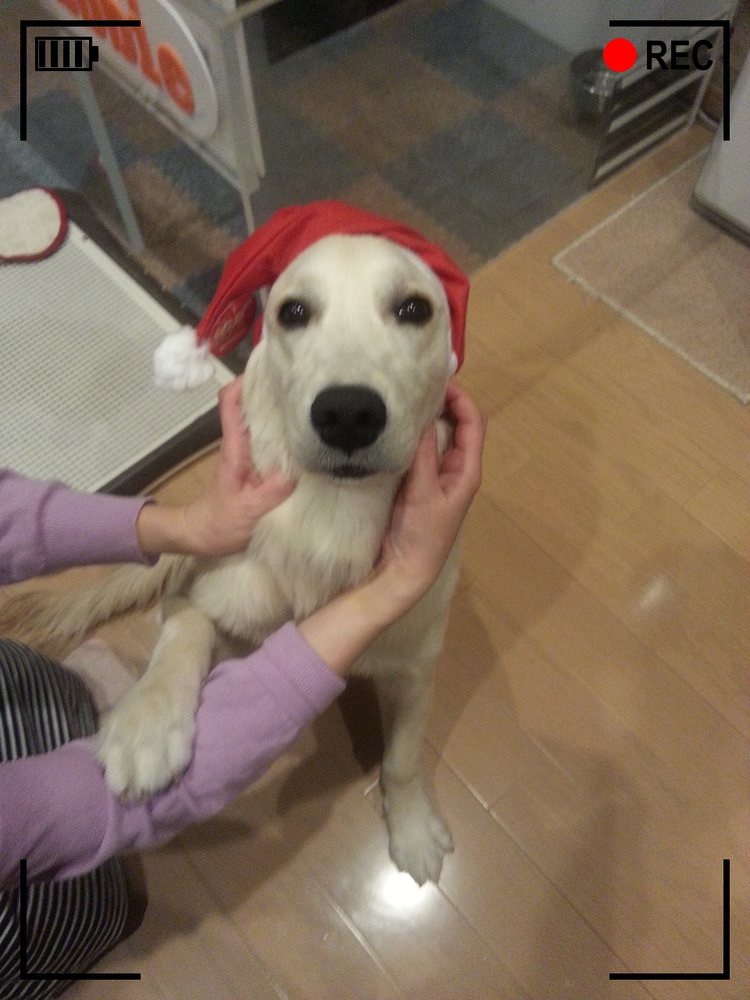
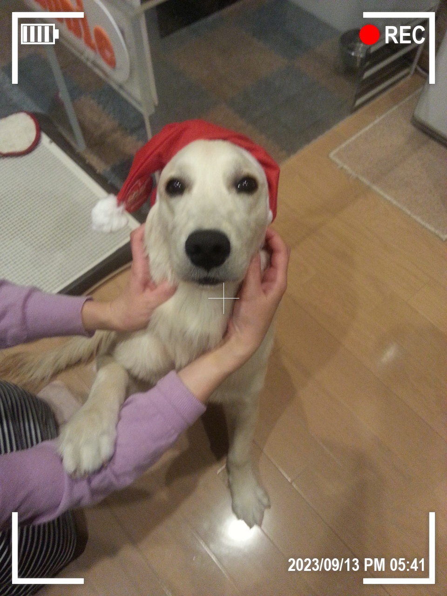
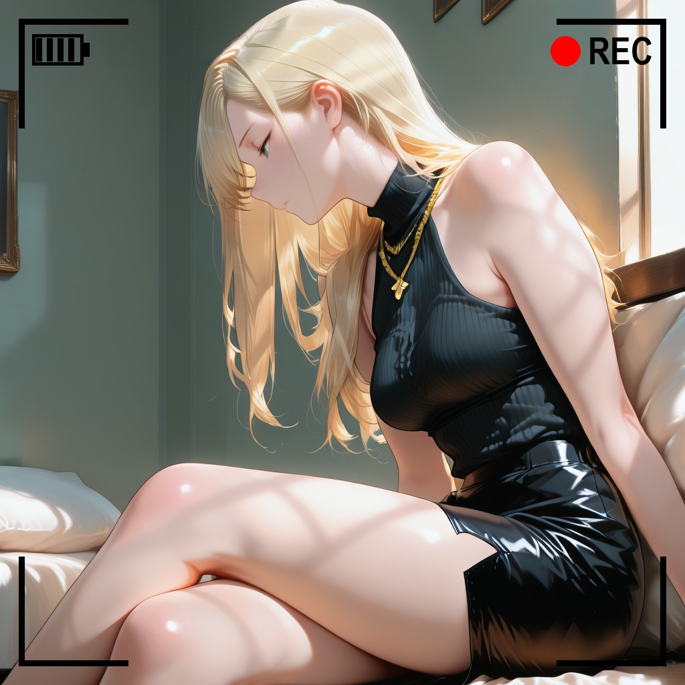
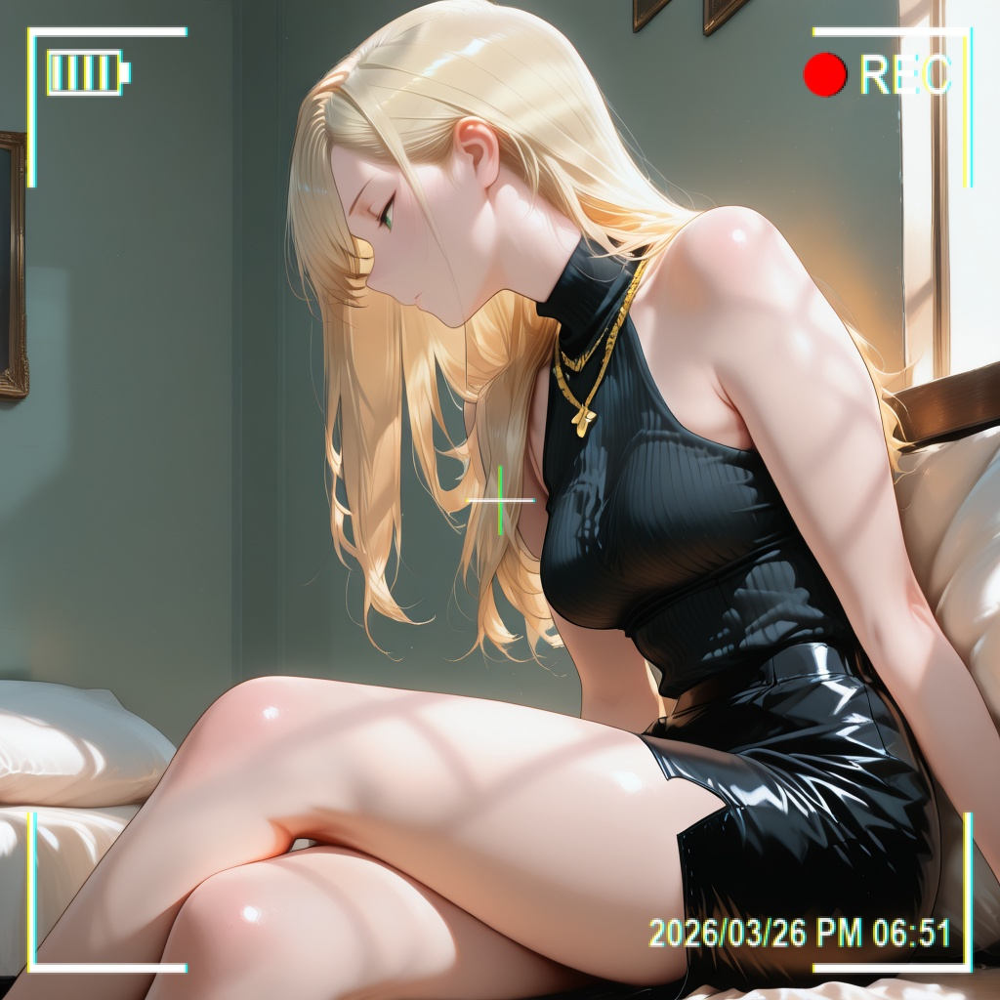

rec-frame-app Camera viewfinder overlay compositor
任意の画像にカメラのファインダー風オーバーレイ（四隅枠＋電池＋赤丸REC＋中央十字＋日時＋劣化エフェクト）を合成するGUIアプリ。透過PNGの拡大縮小ではなく画像サイズからの相対値でベクター生成するため、どんな解像度でも比率が崩れません。Bake a camera viewfinder overlay — corner brackets, battery, red REC dot, crosshair, timestamp, degradation effects — into any image. Vector-generated at relative scale, so any resolution keeps proportions.
作例 / Examples
加工前後の比較ではなく、設定の違いの紹介です。Same overlay engine, different settings — not before/after.




機能 / Features
- 四隅枠・電池・REC・中央十字・日時（
YYYY/MM/DD AM/PM HH:MM）の個別ON/OFFPer-element toggles - 枠色・枠太さ（小/中/大）・フォント・エフェクト（OFF / OLED / 2000s）Color, bracket weight, fonts, effects
- 撮影日時モード（EXIF優先→更新時刻→固定文）Photo timestamp: EXIF, else mtime, else fixed text
- フォルダ一括処理（GUI＋CLI
--batch）Batch a folder from GUI or CLI - 日英即時切替・設定の自動記憶Instant JA/EN switch, settings auto-saved
エフェクト / Effects
エフェクトはオーバーレイ層にだけかかり、元の写真は一切変えません。CRT/VHSのような画面全体への破壊処理はコンセプトに合わないため不採用です。Effects touch only the overlay layer — your photo stays intact. No destructive CRT/VHS filters by design.
アプリ画面 / App UI
{kind=link}
{kind=link}
使い方 / Usage
.venv\Scripts\python rec_frame_app.py
rem CLI batch (--config omitted = remembered settings)
.venv\Scripts\python rec_frame_app.py --batch 入力フォルダ 出力フォルダ --config rec_frame_config.json
rem English CLI
.venv\Scripts\python rec_frame_app.py --lang en --batch input output入力: PNG / JPG / JPEG / WebP / BMP（EXIF Orientation正規化）・出力: PNG / JPEG（quality=95）/ WebP。保存名は {元名}_rec{拡張子}。Input PNG/JPG/JPEG/WebP/BMP, output PNG/JPEG q95/WebP, saved as {name}_rec{ext}.
配布 / Download
一般ユーザーはGitHub Releasesの rec-frame-app.exe をDLしてダブルクリック（Python不要、約17MB）。初回は署名なしのためSmartScreenが出ます（詳細情報→実行）。Windows users: download rec-frame-app.exe from Releases, double-click (no Python needed). Unsigned, so SmartScreen appears on first run.